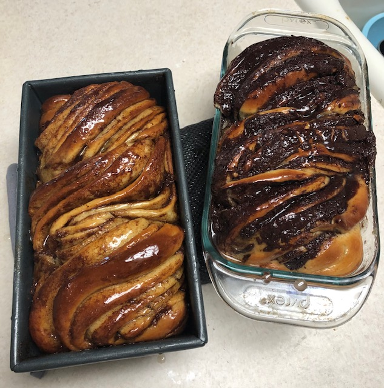
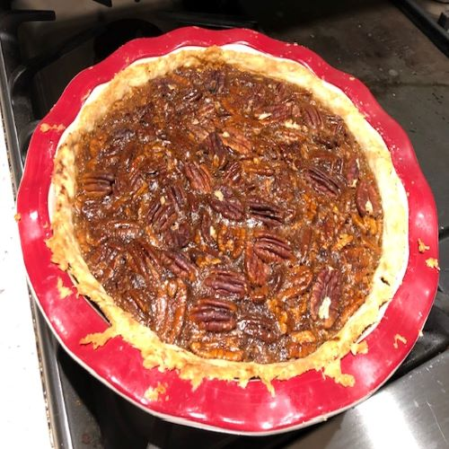
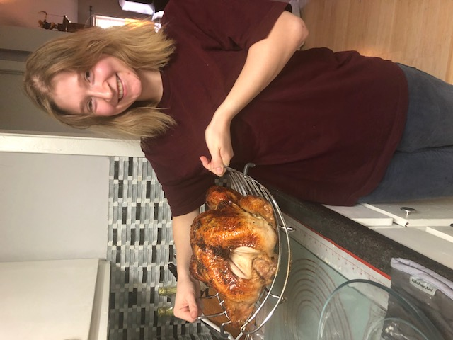

Welcome to my recipe website!
No Knead Bread

Bread Bowls

Babka
Pecan Pie
About Me
Hi, there! I'm Emily and I don't know how to not be awkward when introducing myself, so I'm not going to try to stop it. I love food. I enjoy cooking, baking, eating, and sharing. Food is my love language. I know I'm not alone when I say that food is the way to my heart. My husband and friends bribe me with food. My kids even bribe my with food. It's just so good. I great up a picky eater, which doesn't technically give me credibility, but I like to pretend it does. Growing up, though, food was a big part of my life and my family. My parents are both great cooks, and we had people over all the time for dinner. I definitely learned to love sharing meals through that. I've also been watching cooking videos for ages, far before I learned how to do anything in the kitchen.
I did not learn how to cook until I left for college. I remember calling my mom and asking her how to cook a chicken breast in the oven. And you know what she told me? She told me to just look up a recipe and use the temp and time from that. I was so confused and nervous. Now I use recipes more as guidelines. Some of the recipes you find here I follow exactly, others I tweak just a little, and still others I change based on what I feel like doing. Baking is a little more finicky, depending on what you're making, but with cooking you can really experiment with flavors and techniques. I hope this website can introduce you to some new dishes and help you love cooking like I do. Or more, that's defnitely possible. I hope you can gain some confidence in the kitchen. I am by no means an expert; just an average lady that likes to eat food, but I'm happy to share what I know with those looking to learn.
